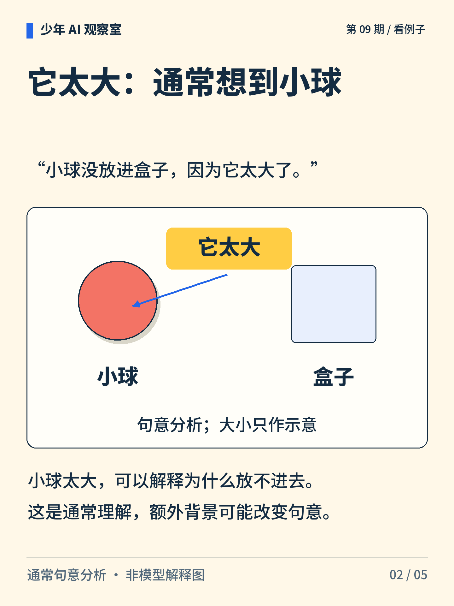
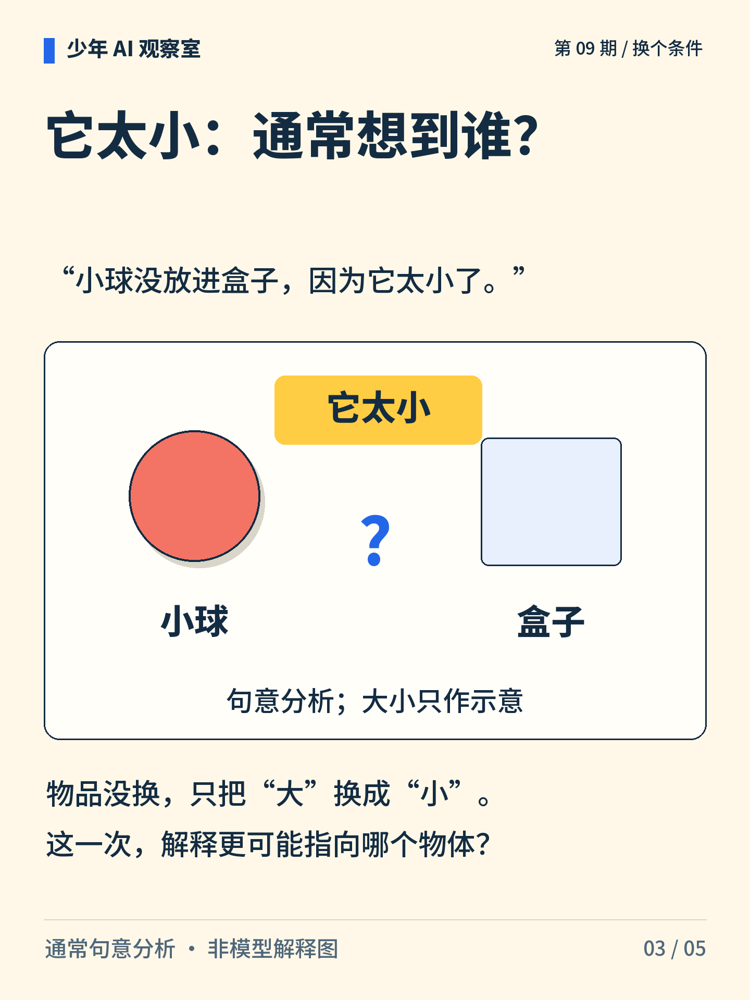
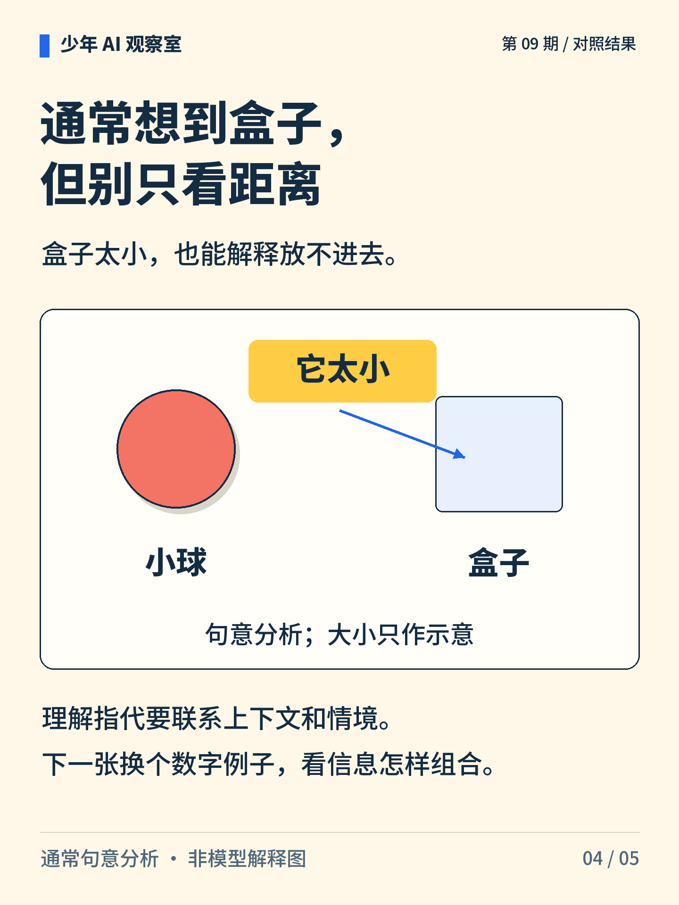
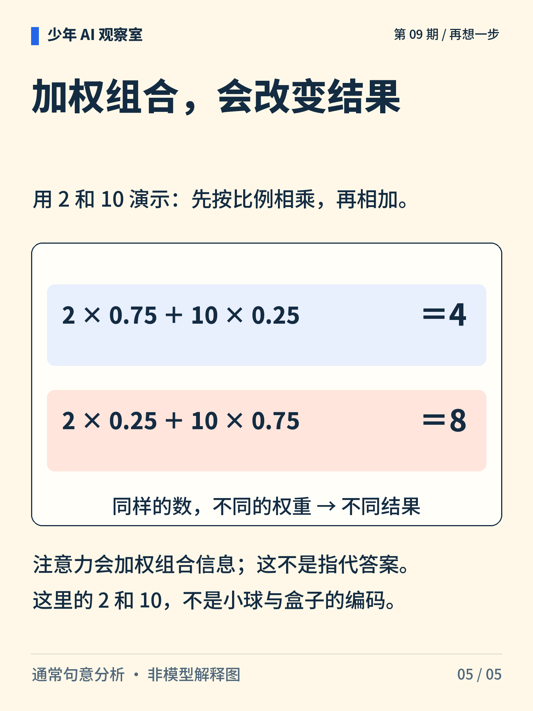

少年 AI 观察室 · 第 09 期
一句话里的“它”，到底指向谁？
小球没放进盒子，因为它太大了。把“大”改成“小”，你想到的对象会变吗？

图解文字
小球、盒子与“太大”“太小”卡片：只把“大”换成“小”，通常指代随之改变。

图解文字
小球没放进盒子，因为它太大了。通常理解为小球太大；物体大小只作示意。

图解文字
改成“因为它太小了”，请结合放不进去的原因判断指向哪个物体。

图解文字
通常理解为盒子太小。不能只靠名词距离，仍需联系整句与情境。

图解文字
独立算例：2×0.75＋10×0.25＝4；交换权重后为 2×0.25＋10×0.75＝8。每组权重和为 1。相同数值采用不同权重会产生不同结果。
想一想
总把“它”指向最近的名词，会在哪一句里出错？
展开参考思路
按通常句意，“它太大”指向小球，“它太小”指向盒子。最近的名词都是盒子，因此一律选最近名词会在“太大”这句出错。额外背景仍可能改变理解，不能把这种通常解释当成唯一答案。
指代要结合句意；加权组合只是信息处理的一种机制。
句意分析与乘加算例分开使用。2 和 10 不是小球与盒子的编码，图中权重也不是模型实测结果；加权算例不能解释模型作答的全部原因。
正文首图为 AI 辅助生成的概念插画；第 2—5 张图按核对过的文字与规则绘制。
延伸阅读资料
文中算例与图解用于说明原理，不是实际模型的测评结果。研究结论对应以下资料。〔1〕 Bahdanau、Cho、Bengio，2014 预印本／ICLR 2015，Neural Machine Translation by Jointly Learning to Align and Translate。arXiv:1409.0473。
https://arxiv.org/abs/1409.0473
〔2〕 Vaswani 等，2017，Attention Is All You Need，第 3 节。arXiv:1706.03762。
https://arxiv.org/abs/1706.03762
〔3〕 Jain、Wallace，2019，Attention is not Explanation，NAACL-HLT。DOI:10.18653/v1/N19-1357。
https://aclanthology.org/N19-1357/
书目信息沿用原稿，本轮未重新核验外部网页的可访问性。